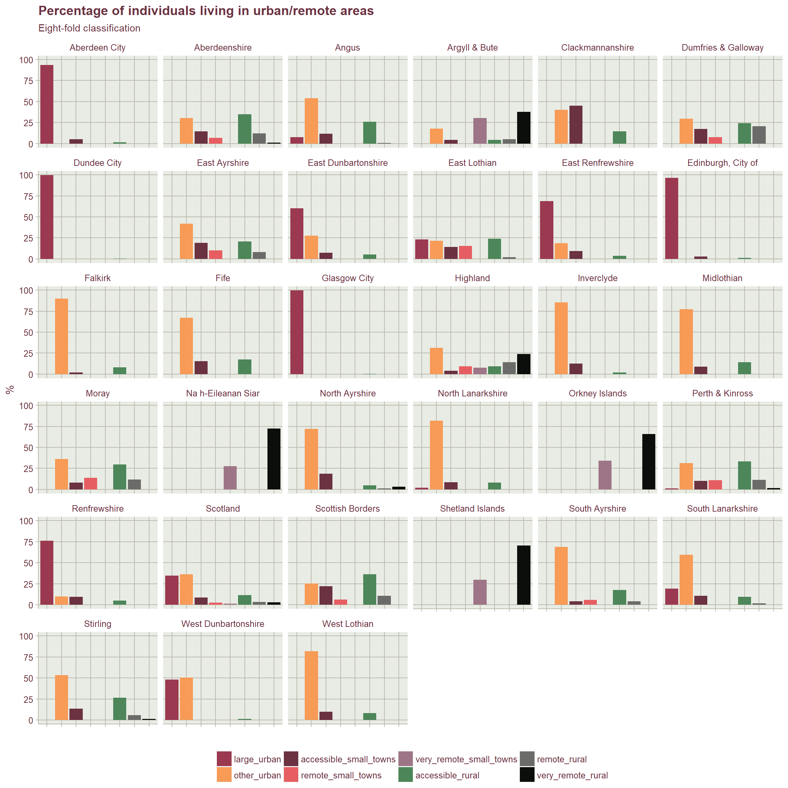

A quick look at the distribution of urban/rural population in each local authority.
library(tidyverse)
library(magrittr) #for pipe assignment
library(janitor) #clean names
library(ggthemr)
ggthemr("grape", "plain")For now, as I am pushed for time, I am going to cut the data from the Excel file and paste as a tibble using the datapasta RStudio addin.
For clarity I am using the 3rd sheet (“CA8FOLD”) from the excel workbook entitled “pop_tables.xlsx” in this projects data folder.
pop_table <- data.frame(stringsAsFactors=FALSE,
Council.Area = c("Aberdeen City", "Aberdeenshire", "Angus",
"Argyll & Bute", "Clackmannanshire",
"Dumfries & Galloway", "Dundee City", "East Ayrshire",
"East Dunbartonshire", "East Lothian",
"East Renfrewshire", "Edinburgh, City of", "Falkirk", "Fife",
"Glasgow City", "Highland", "Inverclyde", "Midlothian",
"Moray", "Na h-Eileanan Siar", "North Ayrshire",
"North Lanarkshire", "Orkney Islands",
"Perth & Kinross", "Renfrewshire", "Scottish Borders",
"Shetland Islands", "South Ayrshire",
"South Lanarkshire", "Stirling", "West Dunbartonshire",
"West Lothian", "Scotland"),
Large.urban = c(93.4, 0, 7.6, 0, 0, 0, 99.5, 0, 60.1, 23.2,
68.6, 96.2, 0, 0, 99.6, 0, 0, 0, 0, 0, 0, 1.9,
0, 1.2, 76, 0, 0, 0, 19, 0, 48.2, 0, 34.6),
Other.urban = c(0, 30.4, 53.9, 17.9, 40.4, 29.7, 0, 42, 27.4,
21.7, 18.8, 0, 90, 67.1, 0, 31.3, 85.5, 77.2,
36.3, 0, 72, 81.6, 0, 31.5, 9.9, 25.1, 0, 68.7,
59.6, 53.2, 50.6, 82, 36.2),
Accessible.small.towns = c(5.3, 14.4, 11.6, 4.2, 45, 17.4, 0, 19.1, 7.4,
14, 9.1, 2.8, 2, 15.4, 0, 4.2, 12.5, 8.8, 8.2,
0, 18.8, 8.5, 0, 10.3, 9.4, 22, 0, 4.1, 10.7, 13.4,
0, 9.7, 8.5),
Remote.small.towns = c(0, 6.8, 0, 0, 0, 7.7, 0, 10.3, 0, 15.3, 0, 0, 0,
0, 0, 9.2, 0, 0, 14, 0, 0, 0, 0, 10.9, 0, 6, 0,
5.7, 0, 0, 0, 0, 2.3),
Very.remote.small.towns = c(0, 0, 0, 30.6, 0, 0, 0, 0, 0, 0, 0, 0, 0, 0, 0,
7.8, 0, 0, 0, 27.6, 0, 0, 34, 0, 0, 0, 29.6, 0,
0, 0, 0, 0, 1.2),
Accessible.rural = c(1.4, 35, 26.1, 4.2, 14.6, 24.2, 0.5, 20.6, 5.1,
23.8, 3.5, 1, 8, 17.5, 0.4, 9.5, 2, 14.1, 29.8,
0, 4.9, 8.1, 0, 33.2, 4.7, 36.1, 0, 17.5, 9.2,
26.6, 1.3, 8.3, 11.2),
Remote.rural = c(0, 12.3, 0.7, 5.4, 0, 20.8, 0, 8, 0, 2, 0, 0, 0,
0, 0, 14.1, 0, 0, 11.7, 0, 1, 0, 0, 11.5, 0,
10.7, 0, 4, 1.6, 5.7, 0, 0, 3.2),
Very.remote.rural = c(0, 1.1, 0, 37.6, 0, 0.1, 0, 0, 0, 0, 0, 0, 0, 0,
0, 23.8, 0, 0, 0.1, 72.4, 3.3, 0, 66, 1.4, 0, 0,
70.4, 0, 0, 1.1, 0, 0, 2.8)
)Man, I love that addin!!
Data is all good but I need to tidy up the variable names and factorise the local authority variable
pop_table <- clean_names(pop_table)
pop_table$council_area <- factor(pop_table$council_area)I also want to make the table “tidy” and in long format for easier plotting
#gather
pop_table %<>%
gather(class, percent, large_urban:very_remote_rural)
#factorise class
pop_table$class <- factor(pop_table$class,
levels = c("large_urban", "other_urban", "accessible_small_towns",
"remote_small_towns", "very_remote_small_towns", "accessible_rural",
"remote_rural", "very_remote_rural")
)Ready to plot now
pop_table %>%
ggplot(aes(class, percent, fill = class)) +
geom_col() +
facet_wrap(~council_area) +
theme(
axis.text.x = element_blank(),
legend.position = "bottom"
) +
labs(
title = "Percentage of individuals living in urban/remote areas",
subtitle = "Eight-fold classification",
y = "%",
x = "",
fill = ""
) 
This R Markdown site was created with workflowr